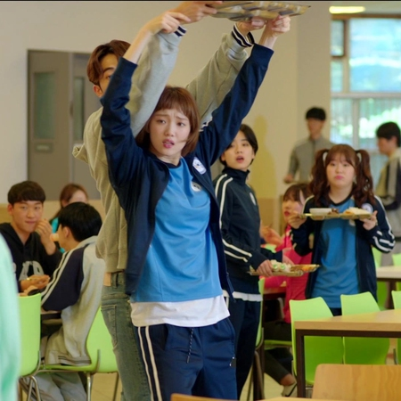
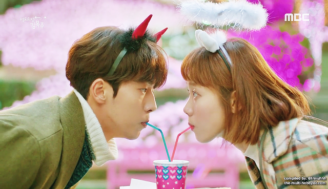
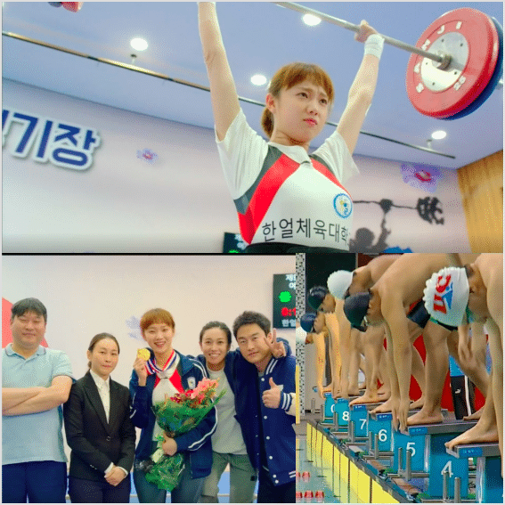
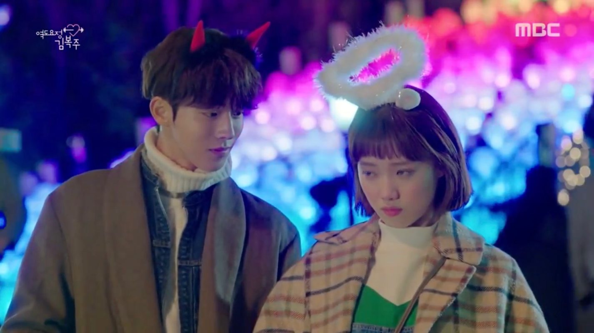
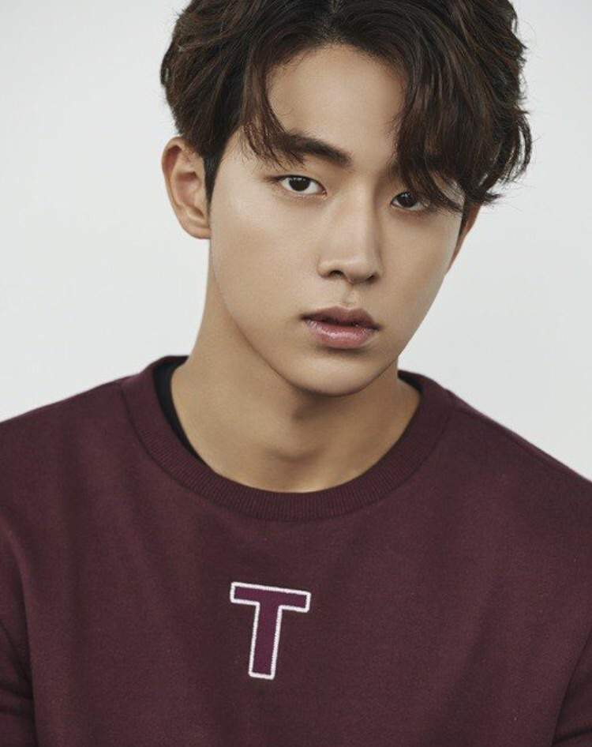
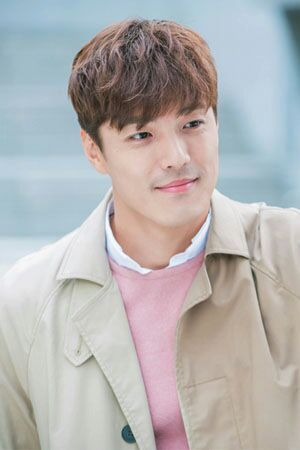
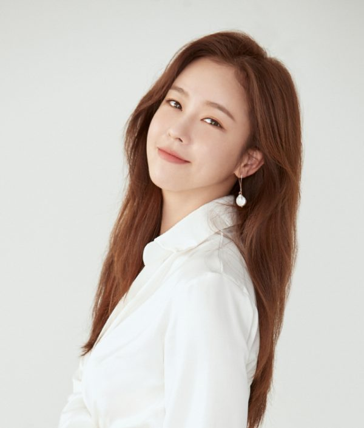

It is a South Korean television series starring Lee Sung-kyung in the title role. It is a coming-of-age sports drama, inspired by the life of Olympic gold-medalist Jang Mi-ran. It aired on MBC every Wednesday and Thursday at 22:00 (KST) starting November 16, 2016 to January 11, 2017.
Scene Photo
   Movie Info
A coming-of-age story about a group of college athletes who are fighting for their dreams, experiencing and finding love in the process, and growing every step of the way.
- Genre: Sports/Romantic-Comedy
- irector: Oh Hyun-jong
- Writer: Yang Hee-seung
- Original Release: November 14, 2016 –January 13, 2017
- No. of Episodes: 16 Episodes
Cast
Lee Sung-kyung as Kim Bok-jooA naturally gifted weightlifter with an ambitious and outgoing personality. While growing up with her father who was a former weightlifter, she got inspired to do the same thing. She stands up for injustice as well–although she still feels shyness and awkwardness around boys, she not hesitate to beat them up if they provoke her. She hides her insecurities and fragile heart under her strong exterior
 Nam Joo-hyuk as Jung Joon-hyungHe is Kim Bok-joo's childhood friend from when they were in elementary school. Both Kim Bok-Joo and himself didn't recognize nor remember each other, until an incident occurred that dug up memories. A talented swimmer with a playful personality, he suffers from a trauma that began when he realized that the postcards being sent to him by his mother were actually from his aunt and uncle. This event coincided with his first big international tournament, and as a result, he made a false start due to a panic attack and got disqualified. He enjoys teasing Bok-Joo, and later falls in love with her.
 Lee Jae-yoon as Jung Jae-yi Joon-hyung's cousin and ersatz older brother.A former athlete who becomes an obesity doctor due to an injury. His gentle and kind personality makes him the first man that Bok-Joo falls in love with.
 Kyung Soo-jin as Song Shi-ho Bok-Joo's roommate and Joon-Hyung's ex-girlfriend.She still has feelings for him and becomes jealous of his and Bok-joo's strong relationship, leading her to commit negative acts towards Bok-joo. She is a top-class rhythmic gymnast, who won a silver medal at the Asian Games at the age of eighteen. Shi-ho is an overachiever, and is under constant stress about her weight and skills, which caused her to break up with Joon-hyung, and act rashly in various situations.
Production
- Executive producer(s):
- Oh Min-soo
- Kim Sang-heon
- Cinematography:
- Lee Jin-duk
- Kim Sun-chul
- Park Hwa-jin
- Editor(s):
- Oh Sere-na
The series is written by Yang Hee-seung of the 2015 romantic comedies Oh My Ghostess and High School King of Savvy; and directed by PD Oh Hyun-joong of 7th Grade Civil Servant. The first script reading took place on August, 2016 at MBC broadcasting station in Sangam, Seoul, South Korea.